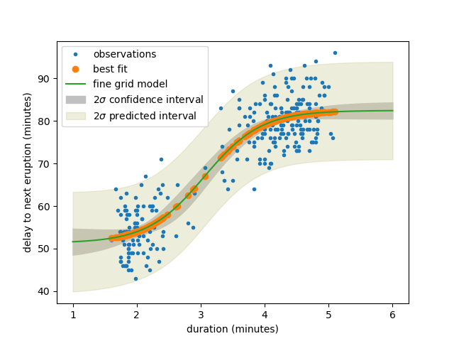

Note
Go to the end to download the full example code.
Model - uncertainty pred¶
[[Model]]
Model(logistic_func)
[[Fit Statistics]]
# fitting method = leastsq
# function evals = 60
# data points = 272
# variables = 4
chi-square = 8469.42359
reduced chi-square = 31.6023268
Akaike info crit = 943.249061
Bayesian info crit = 957.672270
R-squared = 0.83090615
[[Variables]]
amp: 82.4660404 +/- 0.99770817 (1.21%) (init = 90)
off: 51.3218514 +/- 1.83125060 (3.57%) (init = 50)
tau: 3.05525924 +/- 0.11068420 (3.62%) (init = 2)
gamma: 2.25386377 +/- 0.43544396 (19.32%) (init = 2)
[[Correlations]] (unreported correlations are < 0.100)
C(off, gamma) = +0.8634
C(amp, gamma) = -0.7706
C(off, tau) = +0.7277
C(amp, off) = -0.5381
C(tau, gamma) = +0.4699
# <examples/doc_model_uncertainty_pred.py>
# Here we reproduce the results presented in Section 5.1 of the
# nonlinear regression lecture by Julien Chiquet
# https://jchiquet.github.io/MAP566/docs/regression/map566-lecture-nonlinear-regression.html
import matplotlib.pyplot as plt
import numpy as np
from lmfit import Model
# data from the R base package datasets for the waiting time between eruptions
# and the duration of the eruption for the Old Faithful geyser in Yellowstone
# National Park, Wyoming, USA.
tlen = np.array([3.6, 1.8, 3.333, 2.283, 4.533, 2.883, 4.7, 3.6, 1.95, 4.35,
1.833, 3.917, 4.2, 1.75, 4.7, 2.167, 1.75, 4.8, 1.6, 4.25,
1.8, 1.75, 3.45, 3.067, 4.533, 3.6, 1.967, 4.083, 3.85, 4.433,
4.3, 4.467, 3.367, 4.033, 3.833, 2.017, 1.867, 4.833, 1.833,
4.783, 4.35, 1.883, 4.567, 1.75, 4.533, 3.317, 3.833, 2.1,
4.633, 2, 4.8, 4.716, 1.833, 4.833, 1.733, 4.883, 3.717,
1.667, 4.567, 4.317, 2.233, 4.5, 1.75, 4.8, 1.817, 4.4, 4.167,
4.7, 2.067, 4.7, 4.033, 1.967, 4.5, 4, 1.983, 5.067, 2.017,
4.567, 3.883, 3.6, 4.133, 4.333, 4.1, 2.633, 4.067, 4.933,
3.95, 4.517, 2.167, 4, 2.2, 4.333, 1.867, 4.817, 1.833, 4.3,
4.667, 3.75, 1.867, 4.9, 2.483, 4.367, 2.1, 4.5, 4.05, 1.867,
4.7, 1.783, 4.85, 3.683, 4.733, 2.3, 4.9, 4.417, 1.7, 4.633,
2.317, 4.6, 1.817, 4.417, 2.617, 4.067, 4.25, 1.967, 4.6,
3.767, 1.917, 4.5, 2.267, 4.65, 1.867, 4.167, 2.8, 4.333,
1.833, 4.383, 1.883, 4.933, 2.033, 3.733, 4.233, 2.233, 4.533,
4.817, 4.333, 1.983, 4.633, 2.017, 5.1, 1.8, 5.033, 4, 2.4,
4.6, 3.567, 4, 4.5, 4.083, 1.8, 3.967, 2.2, 4.15, 2, 3.833,
3.5, 4.583, 2.367, 5, 1.933, 4.617, 1.917, 2.083, 4.583,
3.333, 4.167, 4.333, 4.5, 2.417, 4, 4.167, 1.883, 4.583, 4.25,
3.767, 2.033, 4.433, 4.083, 1.833, 4.417, 2.183, 4.8, 1.833,
4.8, 4.1, 3.966, 4.233, 3.5, 4.366, 2.25, 4.667, 2.1, 4.35,
4.133, 1.867, 4.6, 1.783, 4.367, 3.85, 1.933, 4.5, 2.383, 4.7,
1.867, 3.833, 3.417, 4.233, 2.4, 4.8, 2, 4.15, 1.867, 4.267,
1.75, 4.483, 4, 4.117, 4.083, 4.267, 3.917, 4.55, 4.083,
2.417, 4.183, 2.217, 4.45, 1.883, 1.85, 4.283, 3.95, 2.333,
4.15, 2.35, 4.933, 2.9, 4.583, 3.833, 2.083, 4.367, 2.133,
4.35, 2.2, 4.45, 3.567, 4.5, 4.15, 3.817, 3.917, 4.45, 2,
4.283, 4.767, 4.533, 1.85, 4.25, 1.983, 2.25, 4.75, 4.117,
2.15, 4.417, 1.817, 4.467])
delay = np.array([79, 54, 74, 62, 85, 55, 88, 85, 51, 85, 54, 84, 78, 47, 83,
52, 62, 84, 52, 79, 51, 47, 78, 69, 74, 83, 55, 76, 78, 79,
73, 77, 66, 80, 74, 52, 48, 80, 59, 90, 80, 58, 84, 58, 73,
83, 64, 53, 82, 59, 75, 90, 54, 80, 54, 83, 71, 64, 77, 81,
59, 84, 48, 82, 60, 92, 78, 78, 65, 73, 82, 56, 79, 71, 62,
76, 60, 78, 76, 83, 75, 82, 70, 65, 73, 88, 76, 80, 48, 86,
60, 90, 50, 78, 63, 72, 84, 75, 51, 82, 62, 88, 49, 83, 81,
47, 84, 52, 86, 81, 75, 59, 89, 79, 59, 81, 50, 85, 59, 87,
53, 69, 77, 56, 88, 81, 45, 82, 55, 90, 45, 83, 56, 89, 46,
82, 51, 86, 53, 79, 81, 60, 82, 77, 76, 59, 80, 49, 96, 53,
77, 77, 65, 81, 71, 70, 81, 93, 53, 89, 45, 86, 58, 78, 66,
76, 63, 88, 52, 93, 49, 57, 77, 68, 81, 81, 73, 50, 85, 74,
55, 77, 83, 83, 51, 78, 84, 46, 83, 55, 81, 57, 76, 84, 77,
81, 87, 77, 51, 78, 60, 82, 91, 53, 78, 46, 77, 84, 49, 83,
71, 80, 49, 75, 64, 76, 53, 94, 55, 76, 50, 82, 54, 75, 78,
79, 78, 78, 70, 79, 70, 54, 86, 50, 90, 54, 54, 77, 79, 64,
75, 47, 86, 63, 85, 82, 57, 82, 67, 74, 54, 83, 73, 73, 88,
80, 71, 83, 56, 79, 78, 84, 58, 83, 43, 60, 75, 81, 46, 90,
46, 74])
# model with a modified logistic function + offset
def logistic_func(t, amp, off, tau, gamma):
return (amp-off)/(1+np.exp(-gamma*(t-tau))) + off
# set up model and initial parameter values
mod = Model(logistic_func)
pars = mod.make_params(amp=90, gamma=2, tau=2, off=50)
# run fit, and print report
result = mod.fit(delay, pars, t=tlen)
print(result.fit_report())
# make finely spaced grid of duration values, extending past data range
tfine = np.linspace(1, 6, 101)
yfine = result.eval(t=tfine)
# now calculate uncertainty interval and predicted interval for sigma=2, 95% level
efine = result.eval_uncertainty(t=tfine, sigma=2)
pfine = result.dely_predicted
plt.plot(tlen, delay, '.', label='observations')
plt.plot(tlen, result.best_fit, 'o', label='best fit')
plt.plot(tfine, yfine, '-', label='fine grid model')
plt.fill_between(tfine, yfine-efine, yfine+efine,
color="#c0c0c0", label=r'$2\sigma$ confidence interval')
plt.fill_between(tfine, yfine-pfine, yfine+pfine,
color="#d0d0a060", label=r'$2\sigma$ predicted interval')
plt.xlabel('duration (minutes)')
plt.ylabel('delay to next eruption (minutes)')
plt.legend()
plt.show()
# <end examples/doc_model_uncertainty_pred.py>
Total running time of the script: (0 minutes 0.320 seconds)